Vertebrais anteriores
Longo do pescoço
Porção Oblíquo Superior:
Inserção Superior: Tubérculo do arco anterior do Atlas.
Inserção Inferior: Tubérculo anterior dos processos transversos de C3 e C5.
Porção Oblíquo Inferior:
Inserção Superior: Tubérculo anterior dos processos transversos de C5 e C6.
Inserção Inferior: Corpos vertebrais de T1 a T3.
Porção Vertical:
Inserção Superior: Corpos vertebrais de C2 a C4.
Inserção Inferior: Corpos vertebrais de C5 a T3.
Inervação: Ramos de C2 à C7.
Ação: Flexão do pescoço e inclinação homolateral.
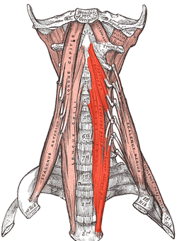
Longo da cabeça
Inserção Superior: Processo basilar do occipital.
Inserção Inferior: Tubérculos anteriores dos processos transversos da 3ª à 6ª vértebras cervicais.
Inervação: C1, C2 e C3.
Ação: Flexão da cabeça.
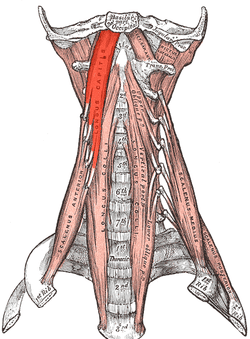
Reto anterior da cabeça
Inserção Superior: Processo basilar do occipital.
Inserção Inferior: Processo transverso e superfície anterior de atlas.
Inervação: Ramo da alça cervical entre C1 e C2.
Ação: Flexão da cabeça.
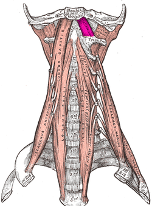
Escaleno anterior
Inserção Superior: Tubérculos anteriores dos processos transversos da 3ª à 6ª vértebras cervicais.
Inserção Inferior: Face superior da 1º costela (tubérculo do escaleno anterior).
Inervação: Ramos dos nervos cervicais inferiores.
Ação: Elevação da primeira costela e inclinação homolateral do pescoço. Ação inspiratória.
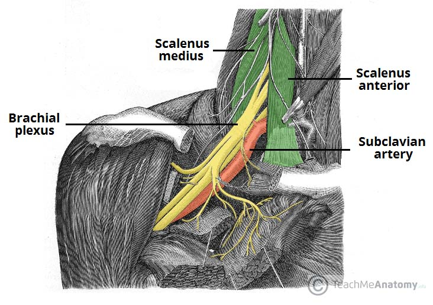
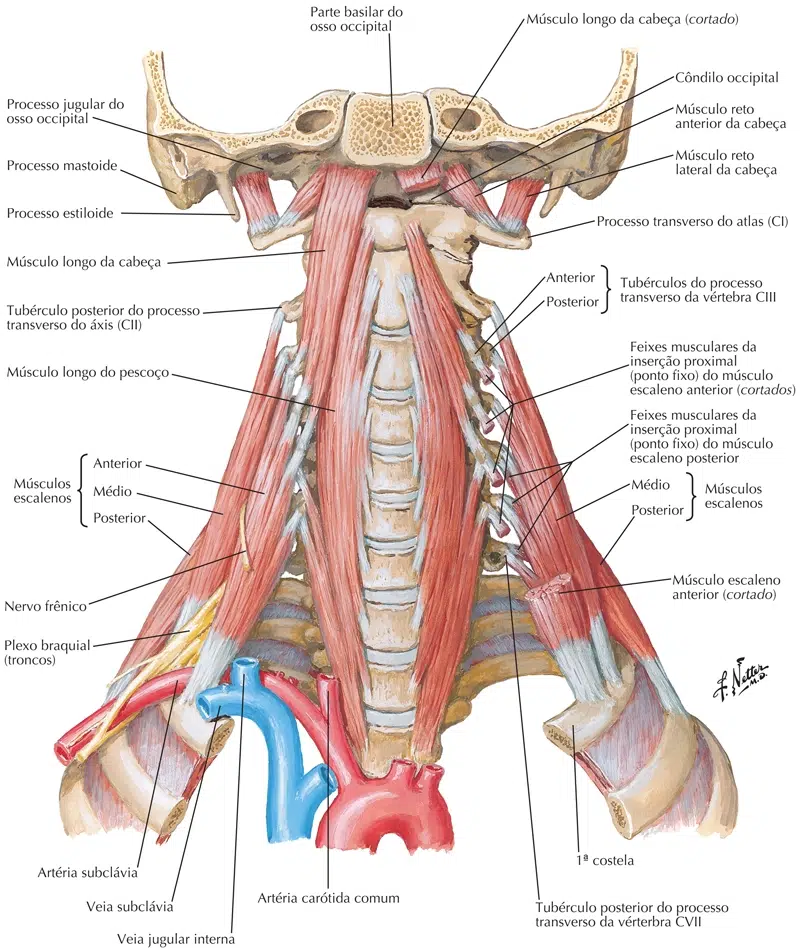

Vertebrais laterais
Reto lateral da cabeça
Inserção Superior: Processo jugular do occipital.
Inserção Inferior: Processo transverso do atlas (vértebra C1).
Inervação: Ramos da alça entre os Nn. espinais C1 e C2.
Ação: Flexão da cabeça. Flexão anterior (ou lateral) da cabeça em relação à coluna vertebral nas articulações atlantoccipitais.
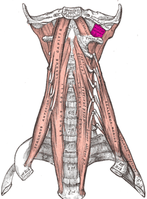
Esplênio da cabeça
Inserção Superior: Metade inferior do ligamento nucal e
processos espinhosos das seis vértebras torácicas superiores.
Inserção Inferior: Face lateral do processo mastoide e terço lateral da linha nucal superior.
Inervação: Ramos posteriores dos Nn. espinais cervicais intermédios.
Ação: Flexão da lateral cabeça. Gira a cabeça e o pescoço para o mesmo lado; agindo bilateralmente. Estende a cabeça e o pescoço.
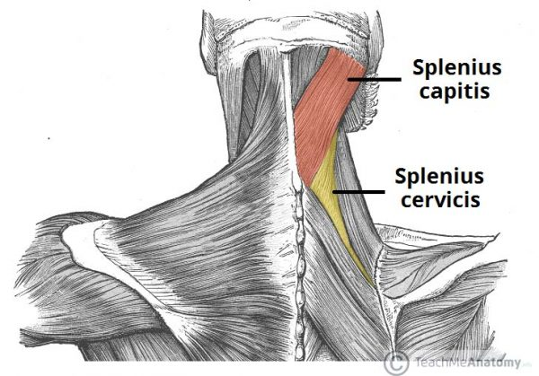
Levantador da escápula
Inserção Superior: Tubérculos posteriores dos processos transversos das vértebras C2 à C6.
Inserção Inferior: Parte superior da margem medial da
escápula.
Inervação: Nervo dorsal da escápula C5 e Nn. espinais cervicais C3 e C4.
Ação: Rotação da escápula para baixo e inclinação da cavidade glenoidal inferiormente por meio de rotação da
escápula.
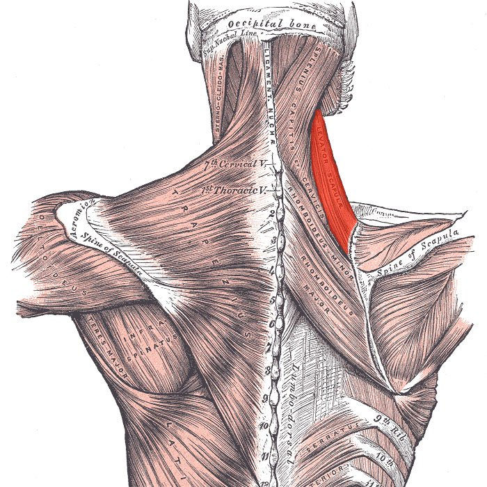
Escaleno médio
Inserção Superior: Tubérculos anteriores dos processos transversos da 2ª à 7ª vértebras cervicais.
Inserção Inferior: Face superior da 1ª costela.
Inervação: Ramos dos nervos cervicais inferiores.
Ação: Elevação da primeira costela e inclinação homolateral do pescoço. Ação
inspiratória.
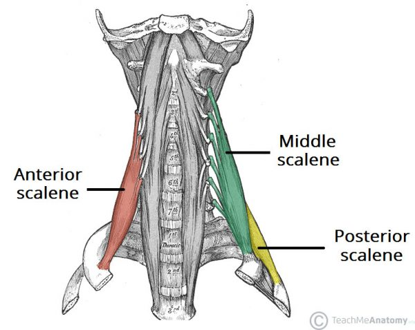
Escaleno posterior
Inserção Superior: Tubérculos posteriores dos processos transversos da 5ª à 7ª vértebras cervicais.
Inserção Inferior: Borda superior da 2ª costela.
Inervação: Ramos anteriores dos 3 últimos nervos cervicais.
Ação: Elevação da segunda costela e inclinação homolateral do pescoço. Ação inspiratória.
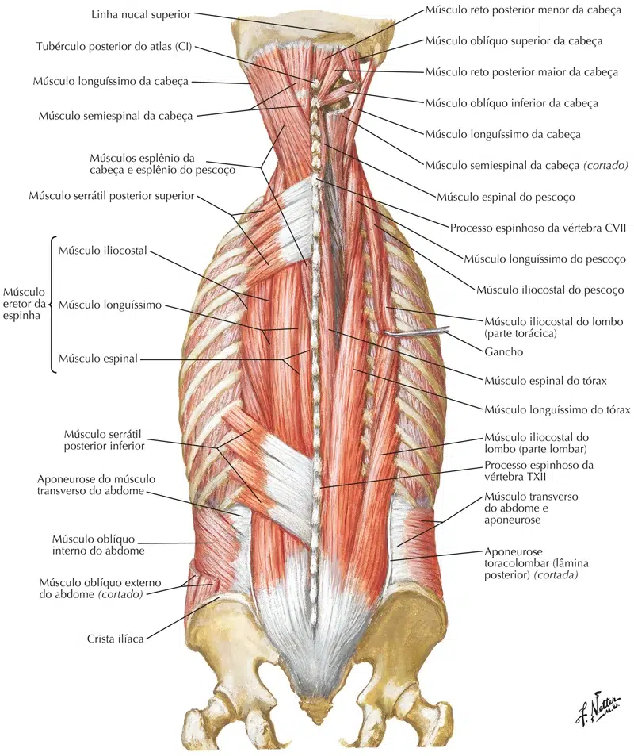
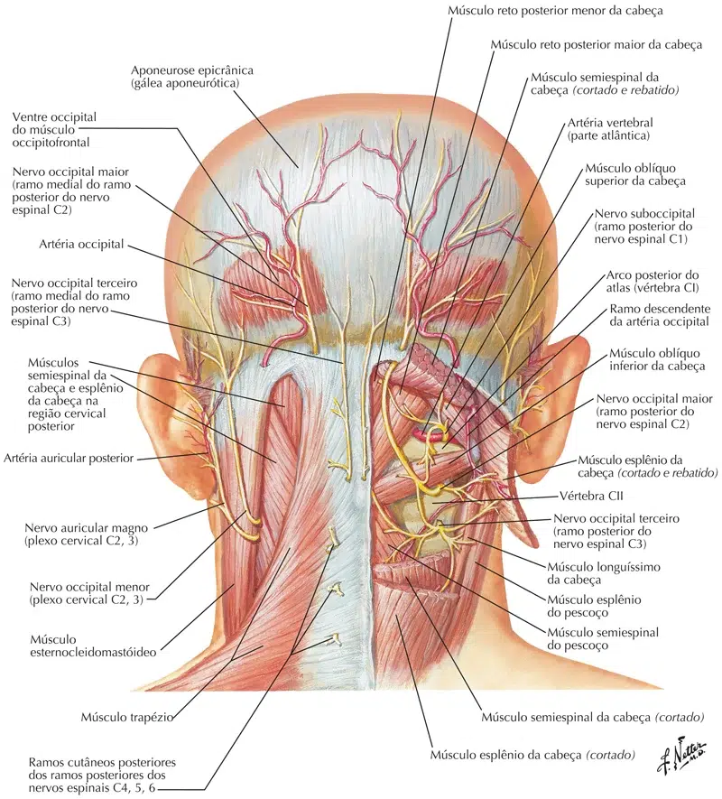
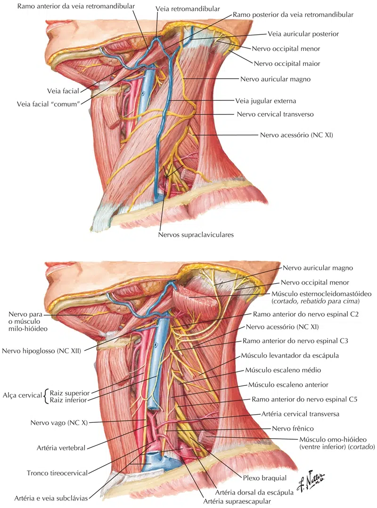